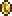

Монеты из разных металлов — основная валюта игры "Terraria". На них покупаются и продаются предметы и услуги NPC.
Виды монет
Существует четыре вида монет. Монета каждого следующего вида равна по достоинству 100 монетам предыдущего: серебряная монета равна 100 медным, золотая — 100 серебряным, платиновая — 100 золотым. Разные виды монет обладают разным уроном при стрельбе из денежной пушки.
| Медная монета | ID: 71 | |
| Серебрянная монета | ID: 72 | |
| Золотая монета |  | ID: 73 |
| Платиновая монета |  |
ID: 74 |
| Медаль защитника |  |
ID: 3817 |
В таблице представлен 1 вид монет которые не создаются, их можно получить во время события армия древних. Монеты называются Медаль защитника. Используются только при торговле с Трактирщиком
Получение
Существует несколько способов получить монеты:
- Уничтожение монстров и боссов. Из многих монстров после смерти выпадают деньги, которые можно подбирать.
- Горшки, сундуки и кошельки, которые можно найти на поверхности и в подземельях, иногда содержат деньги. Также при разбивании горшков можно открыть золотую червоточину.
- Деньги можно получить от NPC, продавая им вещи.
- Также продавать предметы можно другим игрокам на барахолке.
- Выбивать монеты из Перерабатывателя с помощью ила, слякоти и пустынной окаменелости.
- В генерациях под землей лежат монеты (пещера заполненная блоками в случайном порядке)
Создание монет
Монеты каждого вида можно создавать из 100 монет предыдущего вида или, наоборот, разбить на 100 монет предыдущего вида. Для этого не требуется какого-то оборудования вроде верстака или наковальни — монеты можно разбивать просто в своём инвентаре.
- Из 100 медных монет можно сделать 1 серебряную.
- Из 1 серебряной монеты можно сделать 100 медных.
- Из 100 серебряных монет можно сделать 1 золотую.
- Из 1 золотой монеты можно сделать 100 серебряных.
- Из 100 золотых монет можно сделать1 платиновую.
- Из 1 платиновой монеты можно сделать 100 золотых.
Монеты по достижению 100 монет автоматически "сливаются" в 1 монету следующего вида.
Смерть и деньги
Когда герой погибает на лёгкой сложности, половина (75% в Эксперте), с округлением в большую сторону, его денег выпадает на месте его смерти. Если вернуться на место смерти, монеты можно подобрать, в противном случае они пропадут. Потери денег можно избежать, если хранить их в сундуке, сейфе или свинье-копилке. Однако в PvP режиме деньги не теряются, если же вас, конечно, не добьёт дебафф, к примеру от огнемета, догоранием, тогда Вы потеряете часть денег.
Хранение
В инвентаре есть четыре специальные ячейки для монет, но их всё равно можно положить и в обычные ячейки. В начале игры, до получения свиньи-копилки, придётся хранить деньги в сундуках. «Сложить по стопкам» не переместит монеты в сундуки, однако «Положить всё» переместит, но если сундук уже заполнен, то во время нажатия монеты с большим приоритетом могут быть удалены, в случаи если нет ячейки для определённого вида монет.
Интересные факты
-
Монеты имеют урон.
-
Монеты при поднятии издают звонкий звук.
-
При разбитии горшков имеется маленький шанс появления монетного портала.
-
При обмене с НИПами, монеты могут использованы напрямую из свиньи-копилки или сейфа.
-
После обновления 1.3.0.1, медные, серебряные и золотые монеты, являются единственными предметами, максимум которых может достигать 100 штук в одной ячейке.
-
Монетные порталы чаще всего появляются в преисподней, в связи с большим количеством горшков.
-
За раз можно использовать ровно 173 826 платиновых монет, с учётом переносных хранилищ. (40 максимально заполненных ячеек в свинье-копилке (или денежном корыте Только в ПК-версии) + 40 в сейфе + 40 в кузне защитника Только в ПК-версии + 54 в инвентаре).
История
-
Версия 1.3:Новые текстуры монет, звуки и анимации.
-
Версия 1.2.4.1:Исправлена ошибка, при которой наносился урон при взмахе.
-
Версия 1.2.4:Монеты могут быть размещены.
-
Версия 1.2.3.1:
-
Платиновые монеты теперь могут стакаться по 999 штук.
-
Исправлен баг, при котором монеты исчезали во время сортировки.
-
Исправлен дюп монет при помощи быстрой сортировки.
-
-
Версия 1.2.3:
-
Свинья-копилка и Сейф теперь корректно объединяют монеты при использовании сортировки.
-
Исправлен баг, при котором Торговец не появлялся, если у игрока было больше 21 тысячи платины.
-
-
Версия 1.2.0.3:
-
Вы больше не можете продавать монеты.
-
Исправлена ошибка, при которой монеты исчезали, вместо превращения в монету выше курсом.
-
Теперь задержка монет при смерти работает корректно.
-
Монеты теперь автоматически стакаются, когда близко к друг другу.
-
-
Версия 1.2.0.2:Исправлен дюп монет.
-
Версия 1.2:
-
Иногда Быстрая сортировка не работает корректно и монеты могут потеряться.
-
Теперь монеты не могут быть проданы НИПам.
-
Теперь монеты могут быть добыты в Перерабатывателе.
-
Вы больше не можете крафтить предметы или монеты, помещая ингредиенты в корзину.
-
-
Версия 1.1.1:
-
Монеты задерживаются на курсоре корректно при выпадении после смерти.
-
Исправлена ошибка, при которой сложенные в сундук монеты пропадали во время игры по мультиплееру.
-
-
Версия 1.0.6:Добавлен блеск и свечение.
-
Пре-релиз:Монеты добавлены в игру.